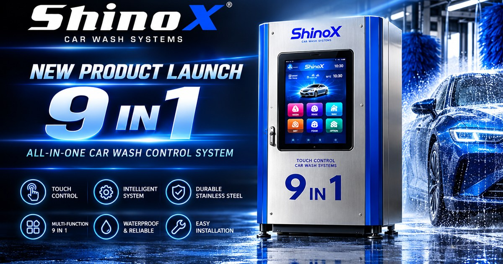
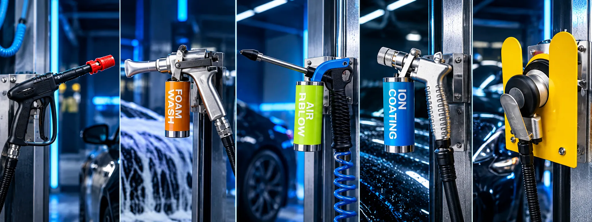

將操作與支付集中在獨立控制位置，配合洗車動線討論設備配置。
- 適用場景：集中操作區
- 安裝方式：固定位置依現場確認

SHINOX / 9 IN 1 CONTROL SYSTEM
一台整合濕區、乾區、支付、會員、營運
02 / OVERVIEW
一台控制箱整合濕區 5 項、乾區 7 項洗車功能，支援投幣、儲值卡、行動支付與雲端會員點數，並可依場地需求設定時間、金額或吃到飽模式，搭配雲端後台即可遠端查看營運狀況。
功能項目可依場地配置；實際九鍵分配、支付及雲端串接依確認方案辦理。
03 / TWO FORMATS

將操作與支付集中在獨立控制位置，配合洗車動線討論設備配置。

配合濕區、乾區與分區操作需求，討論控制箱的掛設位置及功能搭配。
目前選擇：直立式
04 / PRODUCT ADVANTAGES

濕區與乾區功能，依洗車動線集中配置。
投幣、儲值卡、行動支付與雲端會員點數。
依場地需求調整功能、模式與暫停設定。
搭配雲端後台查看設備與營運資訊。
管理介面示意

清潔流程中的沖洗功能。
搭配泡沫清潔的功能配置。
依清洗需求規劃清水功能。
針對細節位置的氣流操作。
依確認的藥劑及設備方案配置。
06 / DRY-ZONE FUNCTIONS

搭配氣源與工具的乾區功能。
規劃車內清潔與吸塵使用位置。
配合洗車後的吹水操作。
依確認的設備與使用規範配置。
插座配置及用電條件依設備確認。
依場地使用需求規劃照明配置。
依操作區域與通風需求配置。
07 / PAYMENTS & SETTINGS
支付服務及會員串接依設備配置與開通方案確認。
依場地需求，討論時間模式、金額模式、吃到飽模式、暫停功能與客製功能配置。
預洗沖水設備
自助泡沫發泡系統
08 / EQUIPMENT CONFIGURATION
以預洗沖水與泡沫設備搭配，整理前道功能需求。
配置示意，設備型式與串接方式待確認。
09 / CLOUD MANAGEMENT
管理功能依設備、網路與雲端服務方案確認；介面為展示示意。
管理介面示意
10 / UPRIGHT SPECIFICATIONS
| 外觀尺寸 | 待確認 |
|---|---|
| 安裝尺寸 | 待確認 |
| 電源規格 | 待確認 |
| 支援功能 | 濕區／乾區功能依九鍵配置確認 |
| 支付方式 | 投幣、儲值卡、行動支付、雲端會員點數 |
| 材質 | 不鏽鋼與粉體烤漆，細節依版本確認 |
| 適用環境 | 依現場條件與設備版本確認 |
| 操作按鍵 | 9 顆功能按鍵，配置依需求確認 |
尺寸、電源與固定方式依設備版本確認，正式規格以雙方確認文件為準。
11 / APPEARANCE & FINISHES
目前選擇：不鏽鋼銀
四色專屬外觀照片待補，實際色樣依確認版本為準。
12 / PRODUCT FEATURES